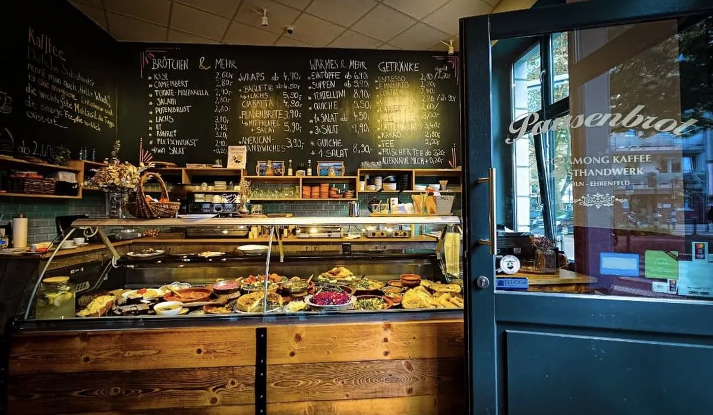
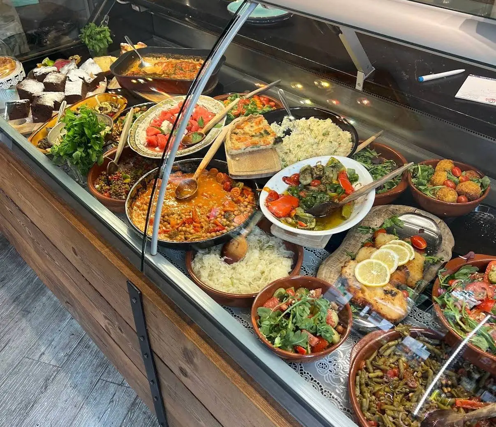
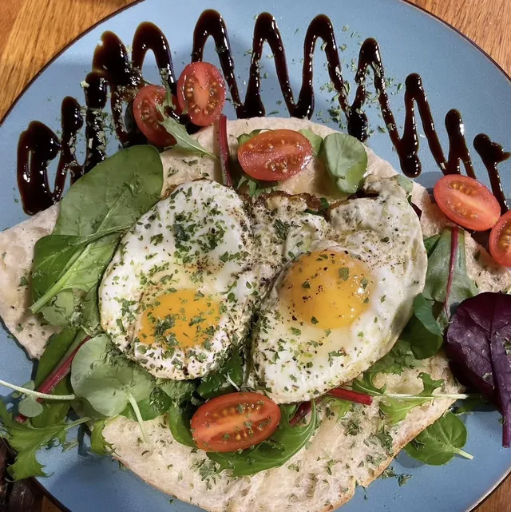
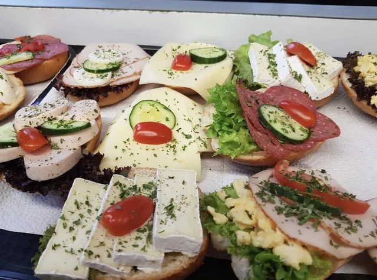
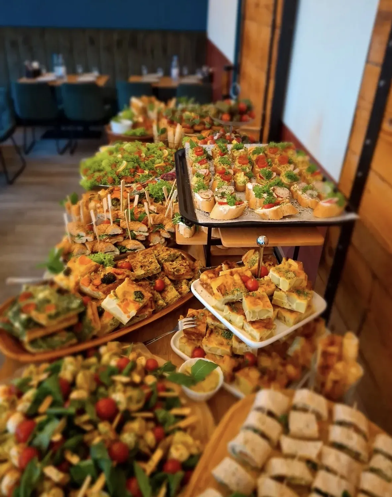
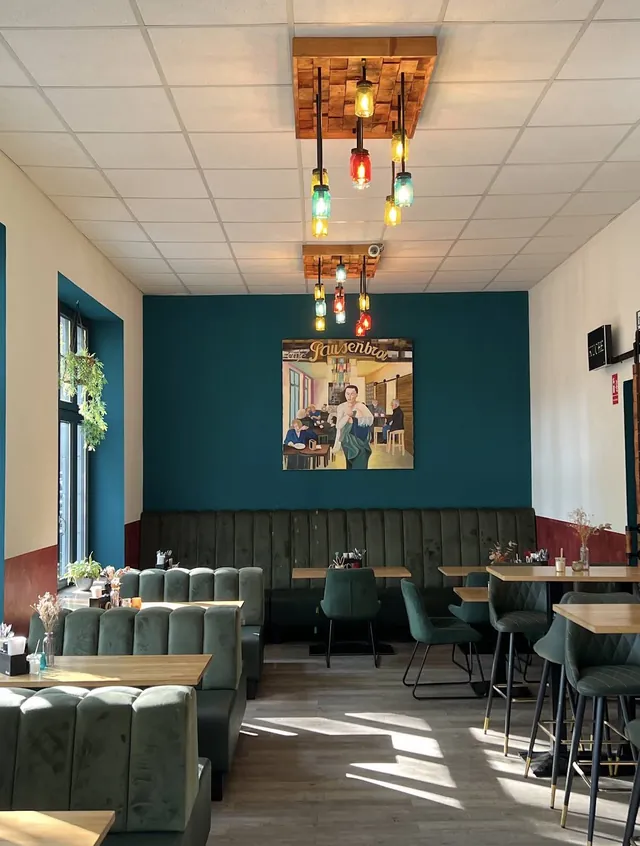

Café Pausenbrot
Frühstück, belegte Brötchen und eine Theke mit Salaten, Eintöpfen und Quiche, die jeden Morgen neu gefüllt wird. Dazu Kaffee von Schamong. In der Rolandstraße, mitten in der Südstadt.

- AdresseRolandstraße 8, 50677 Köln
- GeöffnetJeden Tag 8 bis 18 Uhr
- Gerade
- Telefon0177 321 61 70
Die Theke
Sie wird jeden Morgen neu gefüllt. Mal Linsensalat und Kichererbsen-Eintopf, mal Tortellini, gefüllte Auberginen oder Falafel. Was es gibt, siehst du, wenn du reinkommst.
Auf dem Foto: ein ganz normaler Dienstag.
- Ein Salat
- ab 4,50 €
- Drei Salate
- 8,90 €
- Quiche und ein Salat
- 7,90 €
- Suppe
- ab 5,50 €
- Eintopf
- ab 6,50 €



Frühstück
Ein Korb Brötchen, Käse und Aufschnitt auf dem Holzbrett, Rührei in der Pfanne, kleine Tonschalen mit Aufstrich und Marmelade. Dazu frischer Orangensaft und ein Milchkaffee.
Wer es eilig hat, nimmt ein belegtes Brötchen mit. Die gibt es ab 2,60 €, mit Salat drauf 20 Cent mehr.
Kaffee
Die Bohnen kommen von Schamong, der Rösterei in Köln-Ehrenfeld. Den Espresso gibt es auch doppelt, Milch auf Wunsch pflanzlich, für 30 Cent mehr.
Auf dem Weg zur Arbeit: vorbestellen, vorbeikommen, mitnehmen.

Catering
Bagels, Wraps, Quiche, Falafel, Mozzarella-Spieße, Käse- und Aufschnittplatten mit Obst, warme Gerichte. Für das Büro, den Geburtstag oder die Familienfeier. Sag uns, wann und für wie viele, dann machen wir dir einen Vorschlag.
Too Good To Go
Was abends übrig bleibt, gibt es als Überraschungstüte über die App. Die kleine kostet 3 €. Bring am besten eine eigene Dose mit.
Zur TüteWas heute in der Theke steht
Zeigen wir oft auf Instagram. Oder ruf kurz an, wir sagen es dir.
@cafepausenbrotAnfahrt
Rolandstraße 850677 Köln-Südstadt
Ein paar Schritte vom Chlodwigplatz.
- Montag bis Sonntag
- 8 bis 18 Uhr
An Feiertagen können die Zeiten abweichen. Im Zweifel kurz anrufen.

Die Karte kommt von OpenStreetMap. Erst beim Öffnen wird deine IP-Adresse dorthin übertragen.